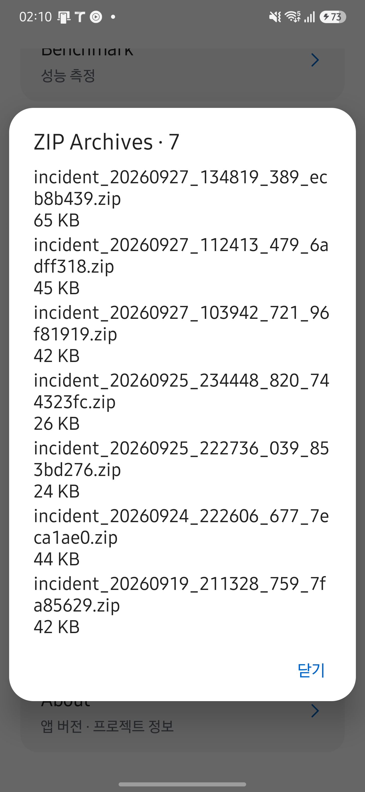

HAL CAMERA / User Guide
Trace the cause.
증상에 맞는 항목부터 확인하세요. 앱 결과만으로 HAL의 문제라고 단정하지 말고, 같은 조건의 기록과 시스템 자료를 함께 확인하세요.
| 증상 | 먼저 확인할 내용 |
|---|---|
| 프리뷰나 출력 구성이 실패합니다. | Live 스트림 설정에서 요청한 조합과 오류를 확인합니다. |
| Callback 값이 비어 있습니다. | 관측 가능 여부와 대기 상태를 구분합니다. |
| 사진이 없거나 노출이 다릅니다. | 저장 포맷과 엔진별 조건을 확인합니다. |
| 실행 기록이나 CSV가 예상과 다릅니다. | 필터와 결과 조건을 확인합니다. |
| PC 명령이 끝나지 않습니다. | 기존 요청의 상태를 조회합니다. |
문제 발생 시 수집할 정보
- 문제 직후 Live의
Save Events · ZIP을 누릅니다. 직전 10초의 기록을 놓치지 않도록 먼저 저장하세요. - 저장이 끝나면
Lab → ZIP Archives에서 ZIP을 공유합니다. - 기기 모델·Android 빌드·설치된 앱 버전과 엔진·카메라·출력 크기·FPS·촬영 설정을 기록합니다.
- 재현 절차와 전체 시도 중 문제가 발생한 횟수를 기록합니다.
로그와 진단 자료
ZIP에는 직전 10초와 이후 5초의 이벤트·메타데이터가 들어갑니다. 이미지 픽셀은 포함하지 않습니다. 사진 자체가 필요하면 갤러리에서 별도로 공유하세요.
아래 화면은 2026년 9월 29일 Galaxy S25+·Android 16에서 HAL CAMERA 0.15.0을 실행해 촬영했습니다. 촬영 조건과 확인 범위를 함께 확인하세요. 이미지를 누르면 원본이 열립니다.

앱과 프레임워크·HAL을 구분하세요
앱의 콜백 간격만으로 HAL 내부 처리 시간이나 프레임 드롭을 확정할 수 없습니다. 같은 카메라와 출력 설정에서 반복되는지 확인하고, 진단 ZIP과 시스템 자료를 함께 비교하세요. 표본 부족이나 관측 불가는 기기 고장을 뜻하지 않습니다.
Callback에 값이 없을 때
현재 엔진과 Android 버전, 선택한 스트림을 확인하세요. No callback은 관측할 수 없는 경로이며, 아직 데이터를 기다리는 Awaiting data와 다릅니다. Callback에서 상태별 의미를 확인하세요.
사진 저장이나 노출이 예상과 다를 때
앱에서 변환한 YUV 사진이 필요하면 JPEG 목록에서 YUV를 선택하세요. YUV 크기만 켜는 것은 분석 스트림 설정입니다. 저장 실패가 반복되면 같은 카메라와 설정으로 재현한 뒤 진단 ZIP을 남기세요.
플래시를 켜면 촬영이 늦어집니다
Camera2의 Flash Auto·On에서는 촬영 전에 밝기를 측정합니다. 이 과정이 3초 안에 끝나지 않으면 안내 문구를 표시하고 촬영을 진행합니다. CameraX는 별도의 자동 측광 순서를 따르므로 지연이 다를 수 있습니다.
녹화 전후에 노출이 달라집니다
AE 잠금 상태에서 녹화를 시작하거나 멈추면 노출을 다시 맞춘 뒤 잠급니다. 잠금 전과 1/3 EV 넘게 달라지면 차이를 알립니다.
Camera2의 수동 노출 시간은 녹화 FPS와 센서 범위로 제한됩니다. 30fps의 프레임 길이는 약 33ms, 60fps는 약 17ms이므로 FPS를 높이면 어두운 장면의 밝기가 달라질 수 있습니다.
실행 기록과 CSV의 개수가 다를 때
화면과 PC 집계에서 적용한 필터가 같은지 확인하세요. Benchmark에서 실행 기록의 필터와 내보내기 범위를 확인할 수 있습니다. CSV 출력 오류가 나면 작업이 실패한 것이므로 저장 위치와 출력 장치도 확인하세요.
CLI 작업이 끝나지 않을 때
PC의 대기 시간이 끝나도 앱 작업은 계속될 수 있습니다. 같은 작업을 다시 시작하기 전에 CLI 오류 대응에 따라 기존 요청 상태를 확인하세요.
다음 단계: 수집 절차에 따라 문제 직후 진단 ZIP부터 저장하세요.